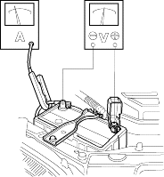
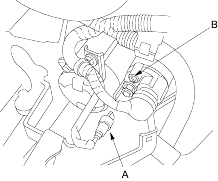

NOTE:
- Air temperature must be between 59° and 100°F (15° and 38°F) during this procedure.
- After this test, or any subsequent repair, reset the Engine Control Module (ECM)/Powertrain Control Module (PCM) to clear any Diagnostic Trouble Codes (DTCs), refer to the '01 Civic Shop Manual on this CD (see page 11-13).
Recommended Procedure:
- Use a starter system tester.
- Connect and operate the equipment in accordance with the manufacturer's instructions.
Alternate Procedure
- Hook up the following equipment:
- Ammeter, 0 - 400 A
- Voltmeter, 0 - 20 V (accurate within 0.1 volt)
- Tachometer, 0 - 1200 rpm

- Remove the No. 46 (15 A) fuse from the under-dash fuse/relay box.
- With the shift lever in
 or
or  (A/T), or the clutch pedal pressed (M/T), turn the ignition switch to start (III).
(A/T), or the clutch pedal pressed (M/T), turn the ignition switch to start (III).
Did the starter crank the engine normally?
YES - The starting system is OK. 
NO - If the starter will not crank at all, go to step 4. If it cranks the engine erratically or too slowly, go to step 7. If it will not disengage from the flywheel or torque converter ring gear when you release the key, check for the following until you find the cause.
- Solenoid plunger and switch malfunction
- Dirty drive gear or damaged overrunning clutch
- Check the battery condition. Check electrical connections at the battery and the starter for looseness and corrosion. Then check the starter again.
Did the starter crank the engine?
YES - The starting system is OK.
NO - Go to step 5.
- Make sure the transmission is in neutral, then disconnect the BLK/WHT wire (A) from the starter solenoid (B). Connect a jumper wire from the battery positive terminal to the solenoid terminal.

Did the starter crank the engine?
YES - Go to step 6.
NO - Remove the starter and diagnose its internal problems.